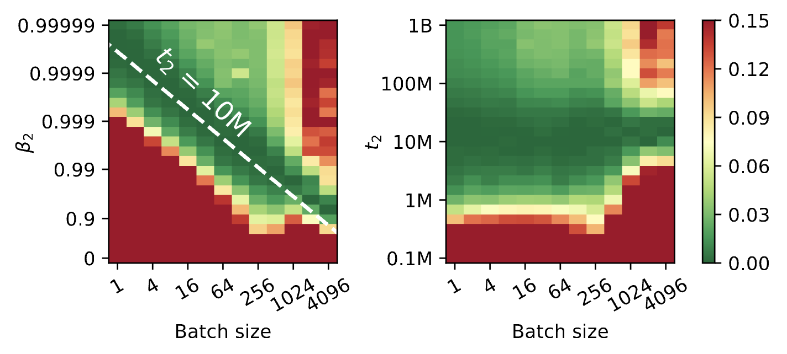
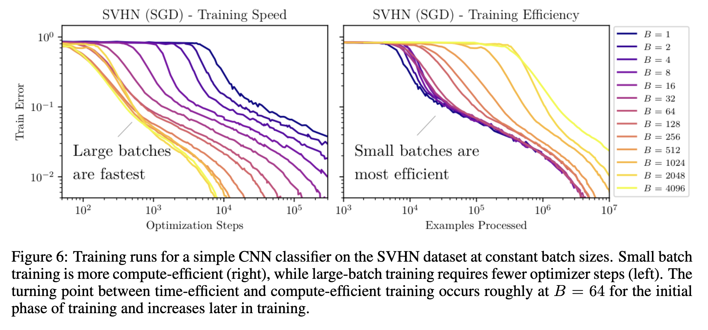
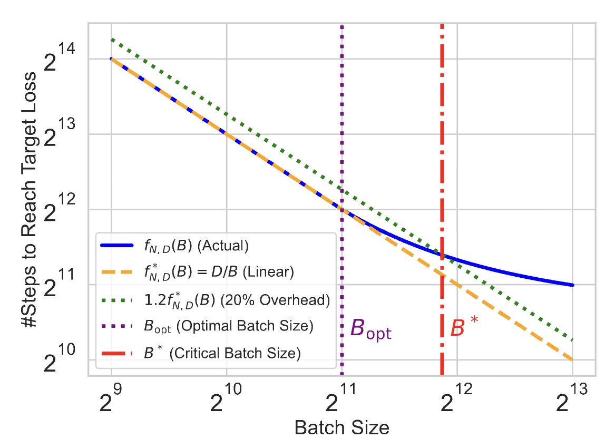
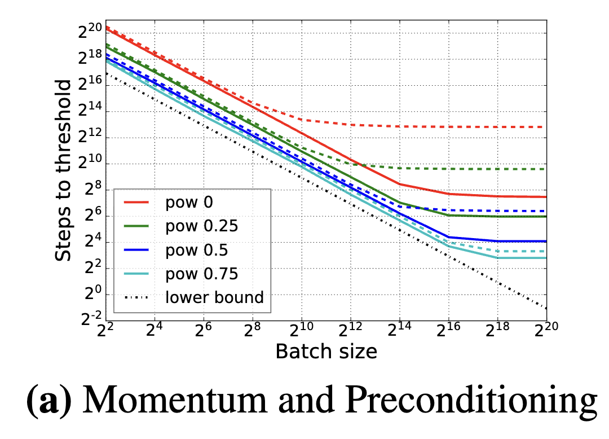
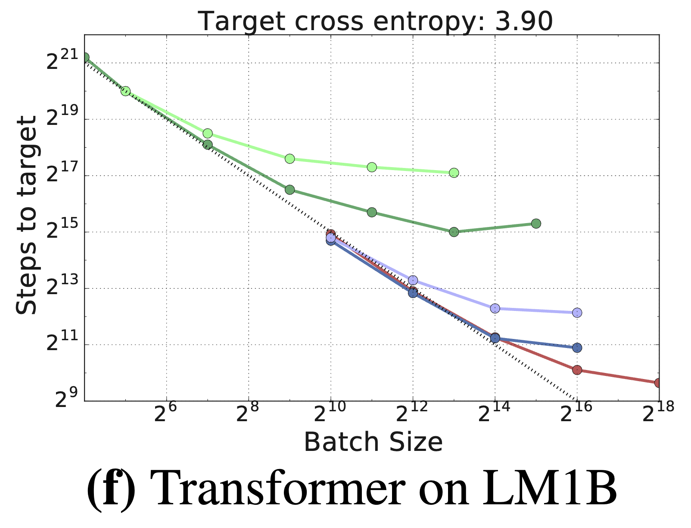
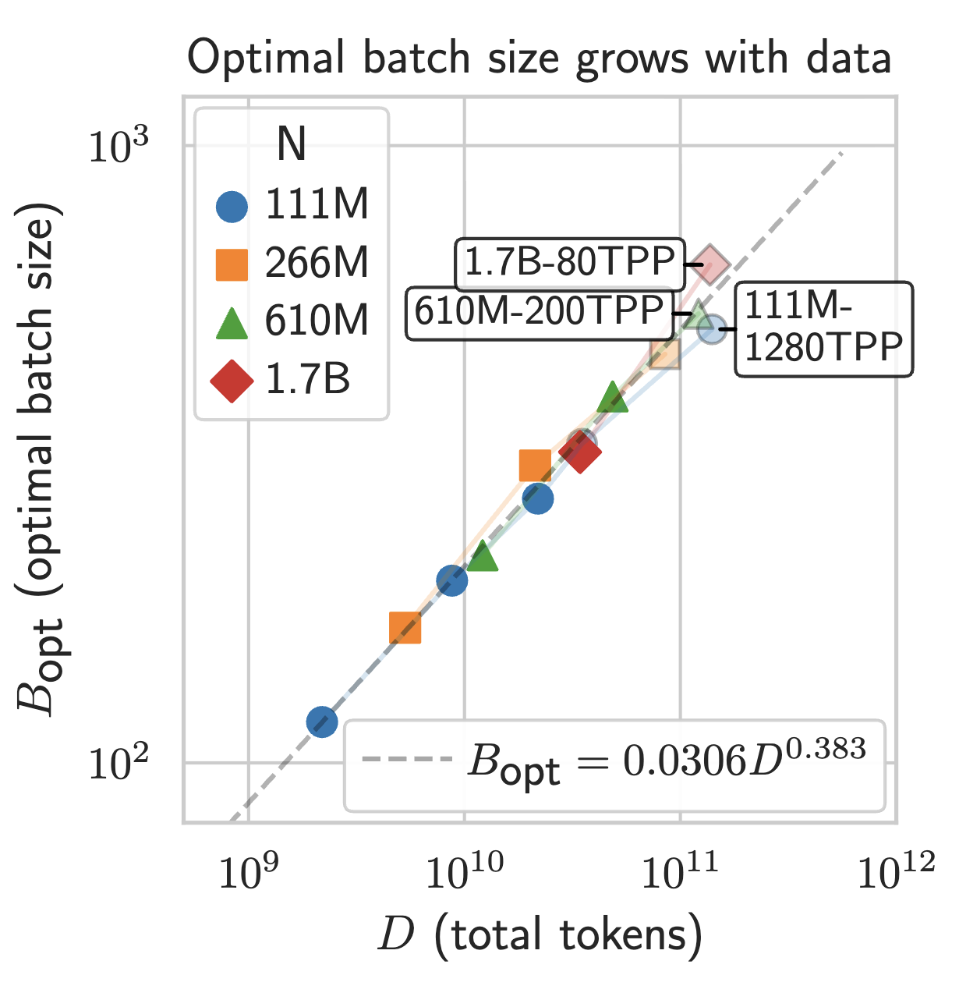

10/6/2026
Batch size is important. Like other hyperparameters, it may be unclear what value is optimal for your setting. Unlike other hyperparameters (like learning rate and momentum), batch size has a complicated interaction with the actual resource constraints of the problem. It is common to hear inconsistent intuitions such as "you want the biggest batch size that fits on your hardware", "smaller batch size gets better generalization", and "you want a tuned medium batch size for practice". In fact, all of these statements are true, just under different resource constraints. This post is reiterating an extremely simple intuition from the Critical Batch Size literature:
This framework has a couple of practical implications
The most important prerequisite is TUNE YOUR HYPERPARAMETERS! I believe the two most relevant hyperparameters when varying batch size are learning rate and momentum.
There are a couple of mental models for how the optimal learning rate \(\eta^*\) should change as a function of batch size \(B\). You should read Malladi, 2024 for a good exposition. The Noisy Quadratic Model (Zhang et al., 2019) predicts that
An often overlooked hyperparameter is \(\beta_2\), the momentum parameter in AdamW. Marek et al, 2025 predicts that the optimal choice of \(\beta_2^*\) follows \(\log \beta_2^* \propto B\). The paper empirically demonstrates that reparameterizing \(\beta_2\) in terms of a half-life \(t_2 \propto -\frac{B}{\log(\beta_2)}\) results in a hyperparameter invariant across batch size (displayed in Figure 1).

Given that our hypers are tuned, suppose we trained with batch size \(B\) for \(K\) steps on fresh data points. This corresponds to processing \(D=BK\) data points. Here, we draw an important distinction between FLOPs (floating point operations) and time (which may both confusingly be called compute colloquially).
As an example, the sequential nature of 2 updates at batch size 1 costs 2x more time than 1 update at batch size 1000 even if it takes 500x less compute. This distinction between FLOPs and time frequently appears in parallel algorithm analysis as "work" and "span".
The Critical Batch Size literature offers a mental model for how different choices of \(B\) affect the number of steps necessary to hit a target validation loss. As a reminder, our claim at the start of the post was "To minimize compute (i.e. \(\propto D=BK\)), use batch size 1. To minimize time (i.e. \(\propto K\)), use as large of a batch size as possible". The original Critical Batch Size paper offers an incredible visualization of these tradeoffs which we show in Figure 2.

Figure 3 (taken from Zhang et al., 2025) visualizes this tradeoff in more detail. The orange line \(D=BK\) is equivalent to fixing the number of data points \(D\) while changing the batch size. If the true step count to reach target (blue line) were on the orange line for all \(B\), it would imply that the choice of \(B\) is irrelevant for compute efficiency. However, the schematic predicts that the blue line will deviate from the orange at large batch sizes at which point larger batch sizes still monotonically reduce step count while taking more compute. The Critical Batch Size literature is concerned with finding the smallest step count at which the compute regret is less than e.g. 20%.
Under this diagram, if we cared about minimizing \(BK\) we would send \(B\) to 1 and if we cared about minimizing \(K\) we would send \(B\) to \(\infty\). To contradict the first conclusion we would need the step count line to curl away from \(D=BK\) at small \(B\) and to contradict the second conclusion we would need the blue line to break monotonicity at large \(B\).

These relationships are cleanly predicted by the Noisy Quadratic Model (Zhang et al., 2019) (which we cover in CS312!). In Figure 4 left, we show how the theory in the NQM makes the same predictions as the mental model in Figure 3. The authors of the original paper find that their theoretical model agrees with practice in Figure 4 right. One interesting related finding is the benefit of momentum and preconditioning for different batch sizes. Interestingly, momentum and preconditioning helps significantly at large batch sizes but basically doesn't help at small batch size. This suggests that the main benefit of modern optimizers comes from increasing the critical batch size to reduce wall clock, not compute efficiency. At alternate framing is that modern optimizers only improve compute efficiency when and only when constrained to large batch sizes.


From my experiments, I believe a similar thing holds for the truly data-constrained regime where you train regualarized overparameterized models with optimal epoching. Anybody want to make the plot for me?
When somebody claims that the right batch size is between \(1\) and \(\infty\), I have two immediate gut reactions
One recent example of my suspicision is Bergsma et al, 2025. When I saw their figures two weeks ago, I was immediately sussed out by their finding that there's an optimal batch size. When I opened the paper, I found that they acknowledge their main figures don't tune \(\beta_2\) and their preliminary experiments suggest that small batch sizes do much better with \(\beta_2\) tuning.

This mental model also affects micro-batching (taking large batch gradients by splitting into multiple small batches and accumulating the gradient). The natural baseline is not doing gradient accumulation and simply applying the gradient update for every computed microbatch. First, observe that micro-batching does not affect wall clock time. Therefore, we can only improve compute/data efficiency. However, compute/data efficiency prefers smaller batch sizes. Therefore, as long as one can correctly tune the other hyperparameters, it is always better for performance to have no micro-batching for performant models. In my head, the main role of micro-batching is to simulate higher batch sizes for scientific purposes, not practical purposes.
A fun question that's neither here nor there: If lower batch sizes improve compute/data efficiency, can you get fractional batches? Atleast for sequence modeling, each data point is actually $L-1$ prediction problems for context length $L$. Though it might hurt compute efficiency to not take the gradient everytime we compute a forward pass, we might be able to squeeze extra data efficiency in the infinite compute regime if we were more clever about how we took the gradient update. Credits to Sam Park for motivating this.
Thank you for reading, and feel free to reach out with any questions or thoughts!